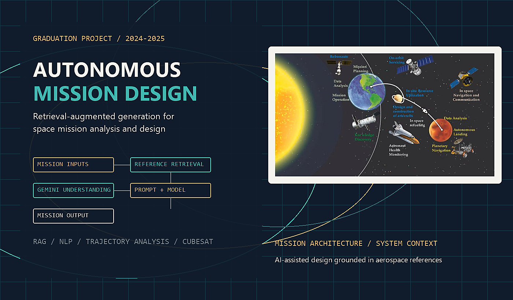
Aerospace AI · Graduation project
Autonomous Mission Design
A retrieval-augmented framework for CubeSat mission analysis and preliminary architecture design, connecting engineering knowledge with LLM orchestration.
RAGLangChainPyTorch
Aerospace engineer · Cairo, Egypt
I build software, embedded systems, and AI-enabled products grounded in systems engineering and real-world problem solving.
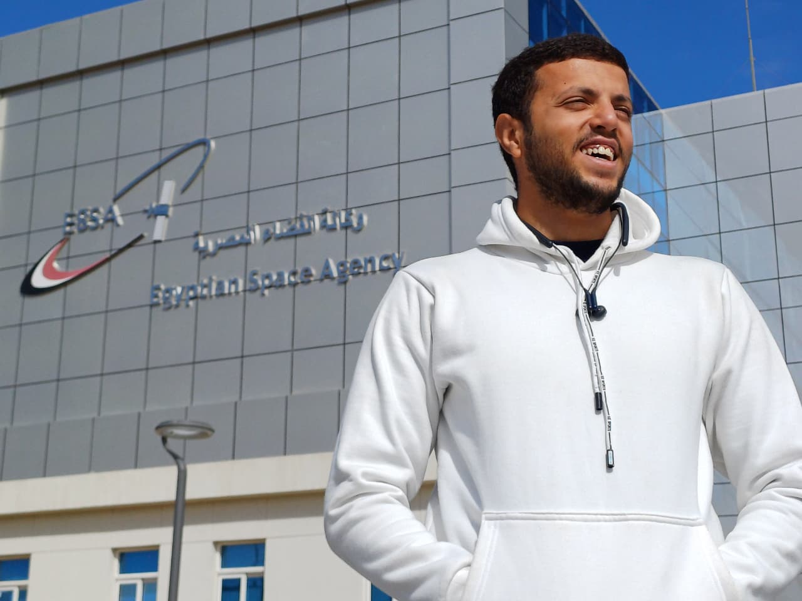
FIELD NOTE / 00130.0444° N · 31.2357° EThe throughline
Aerospace taught me to think in systems. AI and software let me make those systems intelligent. Embedded engineering brings that thinking closer to hardware; product work connects it to people and real needs.
Selected work
A curated set of projects across aerospace, intelligent software, embedded engineering, and entrepreneurship.

Aerospace AI · Graduation project
A retrieval-augmented framework for CubeSat mission analysis and preliminary architecture design, connecting engineering knowledge with LLM orchestration.
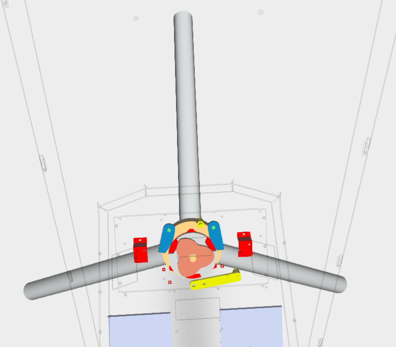
02 / HARDWARE · FIRMWAREEmbedded systems · Hardware integration
Asynchronous firmware coordinating RFID, QR scanning, displays, and relay-based safety mechanisms.
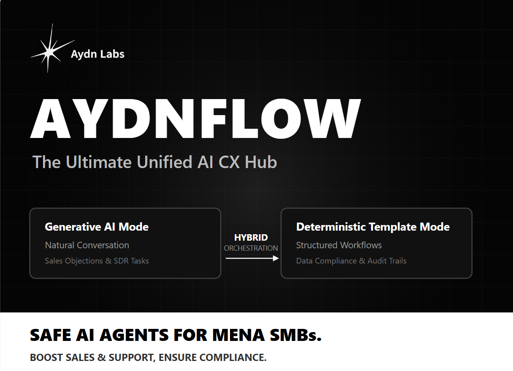
03 / PRODUCT · MENA AIAI product · Business development
A multilingual AI agent concept for MENA sales and support, where product thinking, localization, and technical communication meet.
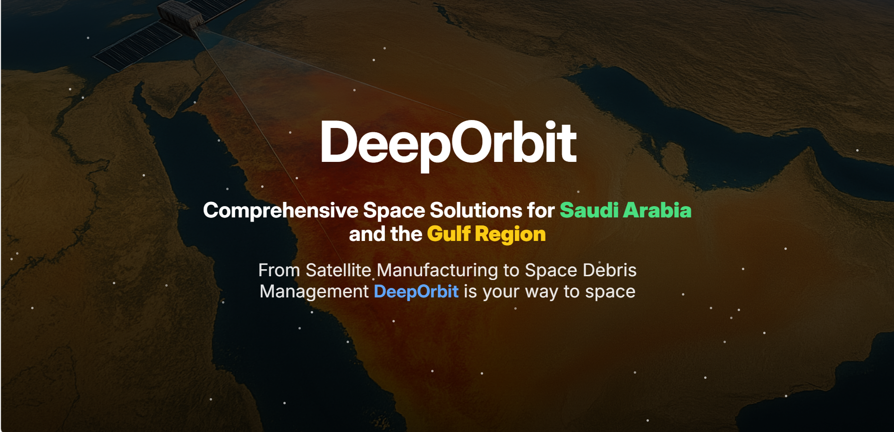
05 / WEB PLATFORM · REACTSoftware engineering · Web platform
A deployed web platform I developed with React, focused on component architecture and integrating backend data APIs.
The professional journey
A visual record of engineering, mission work, AI evaluation, and product thinking. Scroll normally, or use the scene controls.
AydnLabs
Embedded software component development, hardware–software integration, requirements-based testing, debugging, and software issue reporting.
AydnLabs
Connecting technical capability with market needs through research, customer analysis, demonstrations, and proposal development.
AQMAAR
Mission concept development, feasibility analysis, Earth-observation and IoT mission assessment, MATLAB-based mission analysis, and systems validation.
SIRB is presented as a concept demonstration; this page does not claim a flown or operational mission.
Invisible Technologies
Evaluating AI-generated mathematics and STEM responses for accuracy, reasoning quality, and logical consistency.
The supporting visuals are learning and evaluation material, not evidence of Google employment.
Digital Egypt Pioneers Initiative
Applied training across machine learning, deep learning, NLP, generative AI, Azure AI services, MLOps, and practical model development.
Microsoft is shown as a technology context, not an employer. Filmoria materials remain separately identified as entrepreneurial evidence until their course relationship is confirmed.
Ventures & products
Entrepreneurship sits alongside engineering here: as product work, collaboration, and learning in public.
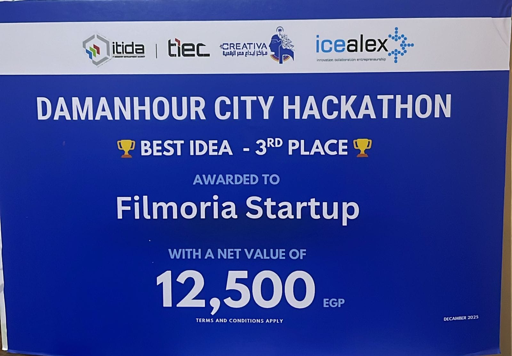
Entrepreneurship · CinemaTech
A cinema-focused initiative exploring safer, more useful ways to discover and experience content. The visual record captures the entrepreneurship journey without overstating product outcomes.
Selected event evidence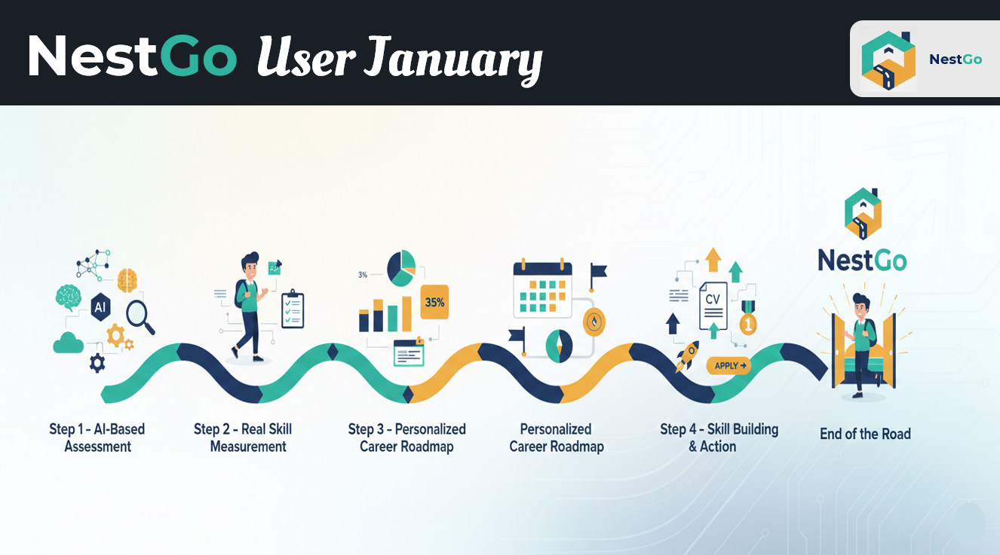
EdTech · Co-founder & Technical Officer
An education platform concept for skill-gap analysis and personalized learning pathways, shaped from product architecture through deployment planning.
Product development experience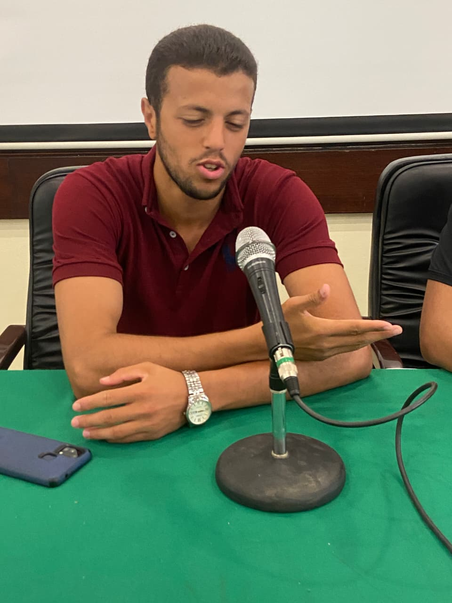
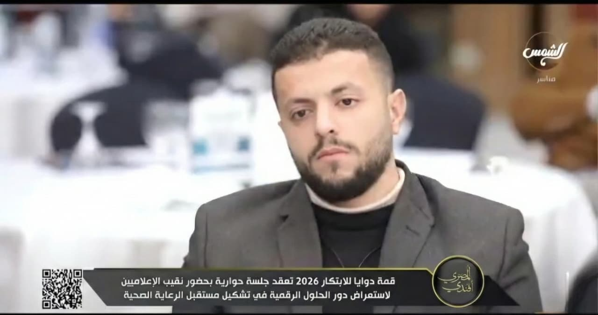
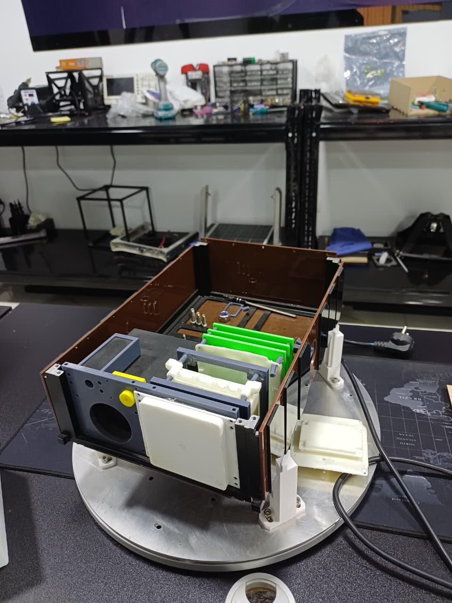
RESEARCH NOTE
SYS / 2026
Research & education
I hold a Bachelor's degree in Navigation Science and Space Technology from Beni-Suef University (2025), with a CGPA of 3.69/4.00 and an Excellent with Honors standing. My graduation project was graded A+.
My completed undergraduate work explored a retrieval-augmented framework for space mission analysis and preliminary subsystem architecture. I am interested in evolving that foundation toward physics-constrained RAG, CubeSat mission analysis, engineering knowledge graphs, and multi-agent workflows.
The postgraduate direction is proposed research, not a completed publication, degree, or current enrollment.
Discuss research or supervisionAbout
.jpeg)
.jpeg)
.jpeg)
I am an aerospace engineer drawn to the space between having an idea and figuring out how to make it real. My work moves between mission analysis, machine learning, embedded systems, software products, and entrepreneurship.
What connects those fields is a systems-oriented way of thinking: understand the constraints, build the right abstraction, test it against reality, and make the result useful to someone.
A personal working story
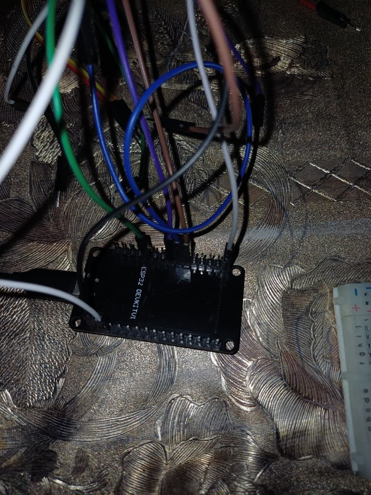
Embedded systems · 2-DOF robotics
A team-built pick-and-place robotic arm combining mechanical design, kinematics, servo control, and Arduino-based integration.
Presentation & product communication
AydnLabs presentation, demo, and video-editing work.
Contact
I am open to engineering roles, research conversations, product collaboration, and thoughtful technical opportunities.